POSTUPAK · DODATNE VJEŽBE (PNEUMATIKA) · FLUIDSIM
Postupak · vježbe V09, V19, V20, V22 i V26 · FluidSIM-P
Postupak — dodatne vježbe iz pneumatike i elektropneumatike u FluidSIM-P
Pet vježbi koje nisu na radnim listovima, korak po korak u FluidSIM-P: pneumatski vremenski član s kašnjenjem iskapčanja, logičke funkcije ILI i I s relejima, vremenski relej s kašnjenjem ukapčanja i taktna metoda sa šest releja. Uz svaki korak su snimke zaslona, simulirane vrijednosti i potpuna rješenja.
- sastaviti pneumatski vremenski član s kašnjenjem iskapčanja i namjestiti kašnjenje
- izvesti funkcije ILI i I paralelnim i serijskim spojem kontakata
- spojiti samodržanje s vremenskim relejem s kašnjenjem ukapčanja
- nacrtati taktni lanac sa šest releja za slijed s ponovljenim koracima
- usporediti rezultate simulacije s proračunom iz vježbe
O postupku
Ova stranica je postupak za vježbe koje nisu dio radnih listova: sve što se radi na računalu, od nove sheme do provjere u simulaciji. Tekst zadatka, sheme, pitanja i rješenja isti su kao na stranicama vježbi V09 Kašnjenje iskapčanja i V19 Logička funkcija ILI i V20 Logička funkcija I i V22 Vremenski relej s kašnjenjem ukapčanja i V26 Taktna električna metoda; ovdje su dopunjeni koracima u FluidSIM-u i rezultatima simulacije.
Rješenja su skrivena ispod svakog pitanja. Najprije riješite sami, a onda otvorite Prikaži rješenje i usporedite.
Gotove sheme (rješenja) za FluidSIM
- PIH_V09_rjesenje_v01.ct — V09: vremenski član s kašnjenjem iskapčanja (jednosmjerni prigušni 3 %, spremnik 0,04 l), 5/2 s pneumatskim upravljanjem, cilindar Ø25/10
- PIH_V19_rjesenje_v01.ct — V19: S1 ∥ S2 → K1, K1 → Y1, cilindar Ø20/8
- PIH_V20_rjesenje_v01.ct — V20: S1 · S2 · B1 → K1, K1 → Y1, cilindar Ø63/20 (B1 kao sklopka sa zasunom)
- PIH_V22_rjesenje_v01.ct — V22: samodržanje K1, 1B1, 1B2, vremenski relej KT1 3 s, cilindar Ø63/20
- PIH_V26_rjesenje_v01.ct — V26: taktni lanac K1–K6, 1A Ø32/12 i 2A Ø63/20, bistabilni razvodnici 1Y1/1Y2 i 2Y1/2Y2
Datoteke se otvaraju u FluidSIM-P 4 (File → Open). Snimke zaslona napravljene su u FluidSIM-P 4.2 s engleskim sučeljem. Osnove rada u FluidSIM-u (nova shema, knjižnica, crtanje vodova, provjera, simulacija, dijagram put–korak) opisane su u Postupku V01, odjeljak 0.
0 · Prije početka
- File → New (Ctrl + N) otvara novu shemu; Window → Tile Vertically (Shift + F4) postavlja shemu i knjižnicu jednu uz drugu.
- Elemente povucite iz knjižnice na shemu i dvoklikom otvorite njihove dijaloge. Vod crtajte povlačenjem od priključka do priključka; povlačenjem na postojeći vod nastaje račvanje.
- Oznake (1A1, 1V1, 1S1, 0Z1 …) upisuju se elementom Text iz skupine Miscellaneous (uključite Frame Text).
- Execute → Check Superficially (F6) provjerava crtež; Start (F9), Pause (F8), Stop (F5).
- Ručno tipkalo aktivirate klikom mišem (dok držite tipku miša); Shift + klik zadrži ga pritisnutim. Ručica sa zasunom prebacuje se jednim klikom i ostaje u položaju.
- Granični ventil veže se uz cilindar oznakom: dvoklik na cilindar → kartica Actuating Labels → oznaka (npr. 1S2) i položaj na hodu (od–do u mm); ista oznaka upiše se dvoklikom na valjak graničnog ventila (Mechanical connection → Label).
- Dijagram put–korak: iz Miscellaneous povucite State Diagram i na njega povucite cilindre i ventile čije stanje želite pratiti.
FluidSIM-P
Sve vježbe na ovoj stranici rade se u pneumatskoj inačici programa; elektropneumatski elementi su u skupini Electrical controls. Tlak se prikazuje u MPa (1 MPa = 10 bar).
Dio A · V09 Kašnjenje iskapčanja
Zadatak
U maloj kabini za bojanje raspršivanjem odsisni kanal zatvara zaklopka koju zakreće dvoradni cilindar 1A1 Ø25/10 mm s hodom 80 mm. Zaklopka se mora otvoriti čim radnik počne bojati, a zatvoriti tek 8 s nakon što prestane, kako bi se iz kabine izvukle zaostale pare. Signal daje ventil 3/2 NC 1S1 povezan s okidačem pištolja (na didaktičkoj ploči zamijenjen tipkalom).
Cilindrom upravlja razvodnik 5/2 s pneumatskim upravljanjem i povratnom oprugom (1V2), a signal mu daje vremenski član 1V1 s kašnjenjem iskapčanja. Vremenski član sastavljen je od istih dijelova kao onaj s kašnjenjem ukapčanja, ali je nepovratni ventil okrenut obrnuto: spremnik se puni brzo, a prazni kroz prigušnicu. Uzmimo: obujam spremnika 40 cm³, razvodnik 3/2 u vremenskom članu vraća se kada tlak u spremniku padne na 1,5 bar, a na početku pražnjenja kroz prigušnicu izlazi 2,0 Nl/min. Mreža daje 6 bar.
Složite sklop, namjestite kašnjenje na 8 s i odgovorite na pitanja.
Sigurnost pri radu
Pažnja
Kod kašnjenja iskapčanja cilindar se giba nakon što je radnik otpustio tipkalo — ruka koja „misli da je sve stalo" može se naći na putu. Prije svakog zahvata u sklop pričekajte da istekne vrijeme kašnjenja i provjerite manometrom da je spremnik prazan. Spremnik se prazni samo kroz prigušnicu: ako je prigušnica potpuno zatvorena, tlak u njemu ostaje dugo i nakon zatvaranja uklopnog ventila.
Shema
Na slici V9.1 signal iz 1S1 ulazi u vremenski član s lijeve strane. Nepovratni ventil propušta zrak prema spremniku, pa spremnik i upravljački priključak 12 razvodnika 3/2 odmah dobivaju tlak i izlaz 2 vremenskog člana gotovo trenutačno uključuje razvodnik 1V2. Kada se 1S1 otpusti, zrak iz spremnika vraća se prema ispuhu ventila 1S1 samo kroz prigušnicu, pa izlaz nestaje sa zakašnjenjem.
Vježba se radi u FluidSIM-u
Koraci postupka vježbe koji se odnose na spajanje na didaktičkoj ploči i mjerenje štopericom ili manometrom izvode se u simulaciji. Gdje simulacija ne može pokazati pojavu iz pokusa, to je napisano uz korak.
A1 · Vremenski član s kašnjenjem iskapčanja
- Nova shema u FluidSIM-P. Cilindar 1A1: dvoradni, dvoklik → Parameters: promjer klipa 25 mm, klipnjače 10 mm, hod 80 mm. Glavni razvodnik 1V2: 5/2 s pneumatskim upravljanjem (14) i povratnom oprugom.
- Signal 1S1: razvodnik 3/2 NC s tipkalom i oprugom. Iza njega vremenski član 1V1 sastavljen od tri elementa: One-way flow control valve (otvorenost 3 %), Air reservoir (obujam 0,04 l) i razvodnik 3/2 NC s pneumatskim upravljanjem (12) koji iz spremnika dobiva upravljački tlak. Na spremnik spojite manometar.
- Smjer jednosmjernog prigušnog ventila je bit vježbe: nepovratni ventil mora propuštati prema spremniku (brzo punjenje), a prigušnica djeluje pri pražnjenju. Ako je smjer krivi, element zrcalite (Edit → Mirror) prije crtanja vodova — zrcaljenje nakon spajanja daje poruku Superimposed lines i vodove treba nacrtati iznova.
- Izlaz 2 razvodnika vremenskog člana vodi na upravljački priključak 14 razvodnika 1V2; izlazi 4 i 2 razvodnika 1V2 na cilindar. Izvor zraka 0,6 MPa. F6 → No superficial errors detected. State Diagram: cilindar (položaj) i manometar spremnika (tlak).
A2 · Simulacija: brzo punjenje, sporo pražnjenje
- Start, zatim Shift + klik na tipkalo 1S1: spremnik se kroz nepovratni ventil napuni gotovo trenutačno, razvodnik vremenskog člana i 1V2 prebace i klipnjača se izvuče — zaklopka je otvorena (Slika A2.1).
- Ponovni klik otpusti 1S1. Spremnik se sada prazni samo kroz prigušnicu: manometar polagano pada (Slika A2.2, 0,45 MPa nekoliko desetinki nakon otpuštanja), a klipnjača ostaje izvučena.
- Kad tlak u spremniku padne na oko 0,15 MPa, razvodnik vremenskog člana se vrati, 1V2 se vrati i klipnjača se uvuče (Slika A2.3). Iz dijagrama (Slika A2.4) kašnjenje iskapčanja iznosi oko 8,3 s.
- Kašnjenje se namješta otvorenošću prigušnice (dvoklik na jednosmjerni prigušni ventil, može i za vrijeme simulacije): manja otvorenost — dulje kašnjenje.
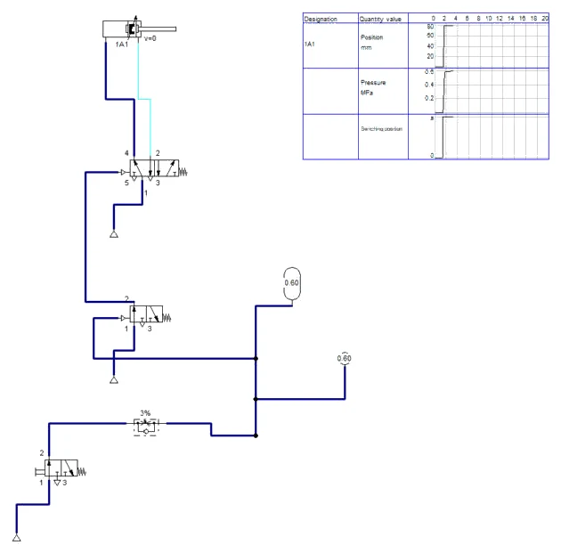
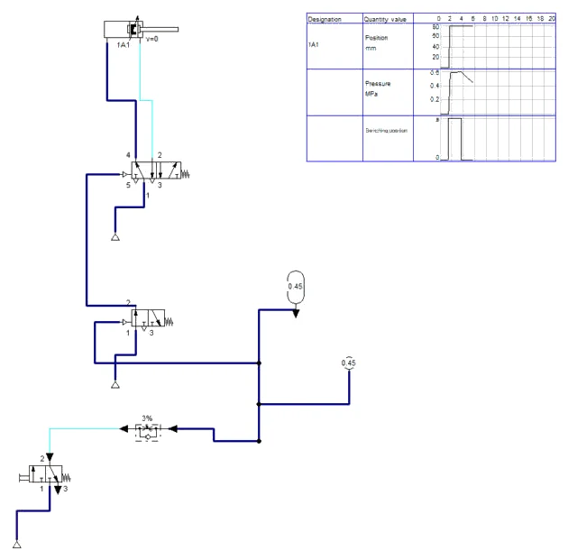
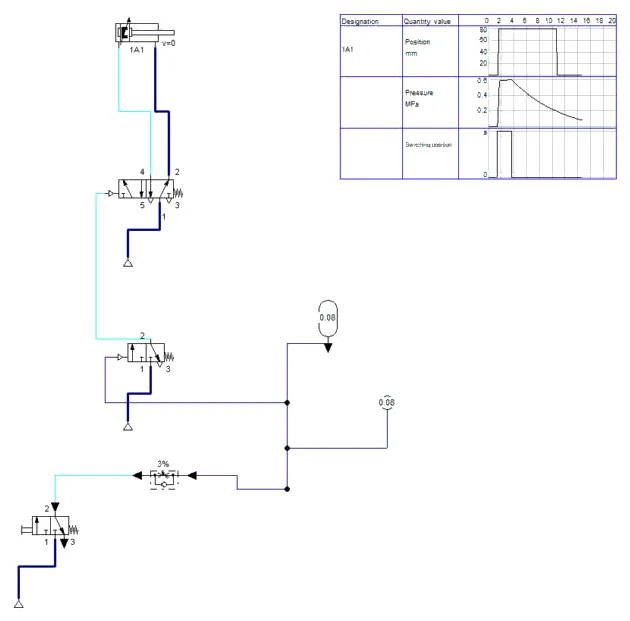
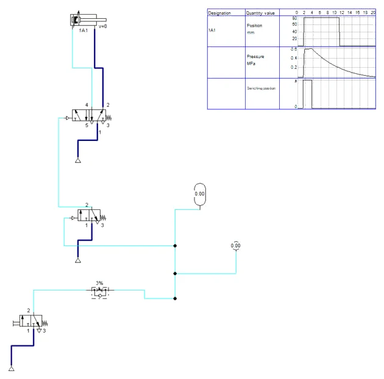
Simulacija i stol
FluidSIM računa protok kroz prigušnicu iz otvorenosti u postocima, a ne iz protoka u Nl/min iz zadatka. Otvorenost od 3 % odabrana je tako da kašnjenje bude blizu 8 s; na stolu se prigušnica isto tako namješta mjerenjem štopericom.
A3 · Pitanja i zadaci
1. Po čemu se vremenski član s kašnjenjem iskapčanja razlikuje od onoga s kašnjenjem ukapčanja? Što ste dobili u koraku 6?
Prikaži rješenje
Dijelovi su isti; razlikuje se samo smjer nepovratnog ventila. Kod kašnjenja ukapčanja spremnik se puni kroz prigušnicu (sporo), a prazni kroz nepovratni ventil (brzo). Kod kašnjenja iskapčanja obrnuto: puni se brzo, a prazni sporo. Okretanjem ventila u koraku 6 dobiva se kašnjenje ukapčanja: zaklopka se otvara tek nakon nekoliko sekundi držanja tipkala, a zatvara odmah nakon otpuštanja.
U FluidSIM-u
U shemi se to vidi na jednosmjernom prigušnom ventilu: nepovratni ventil okrenut je prema spremniku (Slika A2.1).
2. Pri pražnjenju kroz prigušnicu tlak u spremniku približno eksponencijalno opada: t = τ · ln(p0 / p1), gdje su p0 i p1 apsolutni tlakovi, a τ = V · p0 / (pa · Q0). Izračunajte kašnjenje za zadane vrijednosti.
Prikaži rješenje
p0 = 6 + 1,013 = 7,013 bar; p1 = 1,5 + 1,013 = 2,513 bar.
τ = 0,040 l · 7,013 / (1,013 · 2,0 Nl/min) = 0,1385 min = 8,31 s.
t = 8,31 · ln(7,013 / 2,513) = 8,31 · 1,026 = 8,5 s.
Model vrijedi dok je strujanje kroz prigušnicu kritično, tj. dok je apsolutni tlak u spremniku veći od 1,013 / 0,528 = 1,92 bar; tlak vraćanja od 2,51 bar apsolutno je iznad te granice. Prigušnicu treba malo otvoriti da se dobije 8 s.
U FluidSIM-u
Simulacija daje oko 8,3 s (Slika A2.4) uz otvorenost prigušnice 3 % — blizu proračunu od 8,5 s.
3. Koliki bi početni protok kroz prigušnicu dao točno 8 s? Koliki bi spremnik trebao uz nepromijenjenu prigušnicu?
Prikaži rješenje
Vrijeme je obrnuto razmjerno protoku i razmjerno obujmu. Q0 = 2,0 · 8,53 / 8 = 2,13 Nl/min; ili V = 40 cm³ · 8 / 8,53 = 37,5 cm³.
4. Zašto je u koraku 5 kašnjenje pri kratkom pritisku gotovo jednako kao pri dugom? Što se dogodilo pri dvostrukom pritisku?
Prikaži rješenje
Spremnik se puni kroz otvoren nepovratni ventil, dakle vrlo brzo — i kratki pritisak od 0,2 s dovoljan je da se napuni do približno punog tlaka. Kašnjenje se zato mjeri od zadnjeg otpuštanja. Kod dvostrukog pritiska s razmakom od 4 s spremnik se drugim pritiskom ponovno napuni, pa zaklopka ostaje otvorena bez prekida i zatvara se 8 s nakon drugog otpuštanja. Tako i treba biti za odsis: svaki novi rad pištolja produljuje rad.
5. Izračunajte silu cilindra pri izvlačenju i potrošnju zraka po jednom otvaranju i zatvaranju zaklopke.
Prikaži rješenje
A = π · 25² / 4 = 490,9 mm²; F = 0,6 · 490,9 · 0,9 = 265 N.
Apr = 490,9 − 78,5 = 412,3 mm²; V = (490,9 + 412,3) · 80 · 6,923 / 10⁶ = 0,50 Nl po ciklusu, uz to približno 0,24 Nl za punjenje spremnika (0,040 l · 6 / 1,013).
6. Nacrtajte dijagram signala 1S1, izlaza vremenskog člana i dijagram put–vrijeme cilindra 1A1, ako se 1S1 pritisne u 0,5 s i otpusti u 2,5 s.
Prikaži rješenje
Izlaz vremenskog člana pojavljuje se gotovo istodobno s pritiskom (kašnjenje je samo vrijeme punjenja kroz nepovratni ventil i prebacivanja). Nestaje 8 s nakon otpuštanja, u 10,5 s, i tek tada se klipnjača vraća i zaklopka zatvara.
U FluidSIM-u
Dijagram iz simulacije (Slika A2.4) ima isti oblik: izvlačenje odmah, povratak oko 8 s nakon otpuštanja.
7. Serviser je prigušnicu vremenskog člana zatvorio do kraja. Što se događa sa zaklopkom i je li to sigurno stanje za kabinu za bojanje?
Prikaži rješenje
Spremnik se nakon prvog pritiska ne može isprazniti (osim kroz propuštanja), pa izlaz vremenskog člana ostaje uključen i zaklopka ostaje otvorena satima. Za odsis je to sigurnija strana kvara (pare se i dalje izvlače), ali sklop više ne štedi energiju odsisa i ne radi kako je zamišljeno. Suprotna greška — potpuno otvorena prigušnica — dala bi gotovo trenutačno zatvaranje, što je za odsis opasnije.
8. Može li se isto vrijeme kašnjenja iskapčanja dobiti bez spremnika, samo s prigušno-nepovratnim ventilom u upravljačkom vodu? Obrazložite.
Prikaži rješenje
Djelomično: obujam upravljačkog voda i upravljačke komore razvodnika ponaša se kao vrlo mali spremnik, pa prigušnica u vodu daje kratko kašnjenje, obično ispod sekunde. Za 8 s prigušnica bi morala biti gotovo zatvorena, pa bi vrijeme postalo vrlo osjetljivo na nečistoću i temperaturu. Spremnik omogućuje dulja i ponovljivija vremena uz razumno otvorenu prigušnicu.
Dio B · V19 Logička funkcija ILI
Zadatak
Kliznom stazom klize odljevci prema stanici za kontrolu. Na kraju staze je graničnik — zatik koji zadržava dijelove. Kad kontrolor želi propustiti sljedeći dio, zatik se spušta: dvoradni cilindar 1A1 (Ø20/8 mm, hod 30 mm) izvlači se i povlači zatik preko poluge. Dok je signal prisutan, graničnik je spušten; kad signal nestane, opruga monostabilnog razvodnika vraća cilindar i zatik se diže.
Stanica je dugačka 12 m. Kontrolor ponekad radi uz pult na početku staze, a ponekad uz mjerni stol na njezinu kraju. Zato graničnik mora moći spustiti tipkalom S1 na pultu ili tipkalom S2 uz mjerni stol. Oba tipkala spojena su paralelno u stazi releja K1, a radni kontakt K1 uključuje svitak Y1 monostabilnog razvodnika 5/2.
Isti zadatak riješen je u vježbi V06 pneumatski, naizmjeničnim ventilom (ventilom ILI) i pneumatskim tipkalima. Ovdje ga rješavate elektropneumatski i uspoređujete oba rješenja. Podaci: mreža 6 bar, svitak Y1 3 W, relej K1 0,5 W, signalna svjetiljka 0,5 W, napajanje 24 V DC nazivne struje 2,5 A.
Sigurnost pri radu
Pažnja
Upravljanje s dva mjesta znači da se gibanje može pokrenuti s mjesta s kojeg se ne vidi cilindar. Prije pritiska na bilo koje tipkalo provjerite da nitko nema ruke u zoni graničnika i poluge. Kod ovakvih sklopova u pogonu je obvezna i mogućnost zaustavljanja s oba mjesta (dopunski zadatak). Vodiče spajajte bez napona, cijevi bez tlaka.
Shema
Paralelni spoj crta se kao dvije staze koje se spajaju u točki ispod kontakata; točka označava električni spoj. Svitak K1 dobiva napon ako je zatvoren barem jedan od dvaju kontakata — to je logička funkcija ILI (disjunkcija), zapisana kao K1 = S1 ∨ S2.
Vježba se radi u FluidSIM-u
Koraci postupka vježbe koji se odnose na spajanje na didaktičkoj ploči i mjerenje štopericom ili manometrom izvode se u simulaciji. Gdje simulacija ne može pokazati pojavu iz pokusa, to je napisano uz korak.
B1 · Paralelni spoj tipkala
- Pneumatski dio: cilindar 1A1 Ø20/8 mm, hod 30 mm; razvodnik 1V1 5/2 s elektromagnetom i povratnom oprugom, elektromagnet Y1 (dvoklik na oznaku uz kraj razvodnika). Izvor zraka 0,6 MPa.
- Električni dio (Electrical controls): staza 1 — +24V, tipkalo S1 (Pushbutton, make), svitak releja K1, 0V; staza 2 — +24V, tipkalo S2, isti svitak K1 (vod S2 spojite na vod ispod S1); staza 3 — radni kontakt K1 i Y1.
- Oznake: tipkala S1 i S2, relej K1, kontakt K1 (dvoklik → Label). F6 → No superficial errors detected. State Diagram: cilindar, S1, S2 i K1.
B2 · Simulacija funkcije ILI
- Start. Klik na S1: K1 privuče, Y1 dobije napon i klipnjača se izvuče — graničnik spušten (Slika B2.1). Otpuštanjem se vraća.
- Klik na S2: isto ponašanje (Slika B2.2).
- Shift + klik na S1 i zatim Shift + klik na S2: oba tipkala pritisnuta, K1 i dalje privučen, ništa se ne mijenja (Slika B2.3). Dijagram (Slika B2.4) pokazuje K1 = S1 ∨ S2.
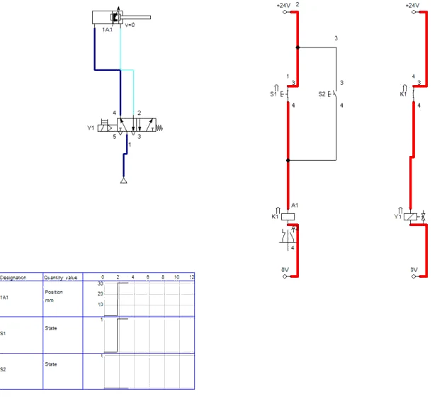
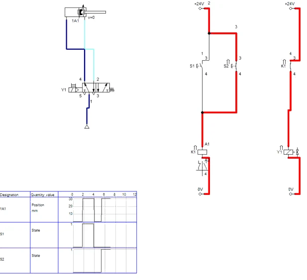
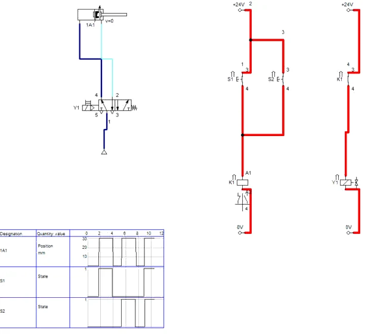
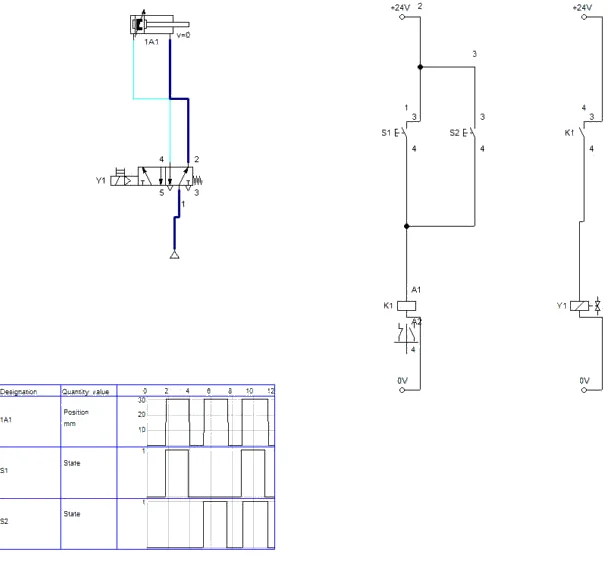
B3 · Pitanja i zadaci
1. Napišite tablicu istinitosti za S1, S2, K1 i Y1 te logičku jednadžbu sklopa.
Prikaži rješenje
| S1 | S2 | K1 | Y1 / graničnik |
|---|---|---|---|
| 0 | 0 | 0 | 0 / gore |
| 0 | 1 | 1 | 1 / spušten |
| 1 | 0 | 1 | 1 / spušten |
| 1 | 1 | 1 | 1 / spušten |
Y1 = K1 = S1 ∨ S2
Izlaz je 1 ako je barem jedan ulaz 1. Pritisak obaju tipkala ne mijenja ništa — nema ni „dvostrukog“ signala ni kratkog spoja.
U FluidSIM-u
Sva četiri retka tablice mogu se provjeriti u simulaciji (Slike B2.1–B2.4).
2. Zašto se tipkala S1 i S2 spajaju paralelno, a ne u niz? Što bi sklop radio da su spojena u niz?
Prikaži rješenje
U paralelnom spoju struja do svitka ima dva neovisna puta; dovoljno je da je jedan zatvoren. U serijskom spoju struja prolazi kroz oba kontakta redom, pa bi K1 privukao samo kad su pritisnuta oba tipkala — to je funkcija I (vježba V20). Za upravljanje s dva mjesta serijski spoj bio bi neupotrebljiv jer kontrolor ne može istodobno biti na oba kraja staze.
U FluidSIM-u
U FluidSIM-u to se lako isproba: premjestite vod S2 tako da bude u nizu s S1 — K1 tada privlači samo uz Shift + klik na oba tipkala.
3. U vježbi V06 funkcija ILI izvedena je naizmjeničnim ventilom. Zašto se tamo ne smiju izlazi dvaju pneumatskih tipkala spojiti samo T-spojnicom, a ovdje se kontakti smiju spojiti izravno?
Prikaži rješenje
Nepritisnuto pneumatsko tipkalo 3/2 spaja izlaz s odzračnim priključkom 3. Kad bi se dva izlaza spojila T-spojnicom, zrak iz pritisnutog tipkala izlazio bi kroz odzračni priključak drugoga i signal ne bi dosegao potreban tlak. Naizmjenični ventil kuglicom zatvara stranu bez tlaka. Otvoreni električni kontakt, naprotiv, ne vodi struju ni u jednom smjeru i ne „odvodi“ signal, pa se kontakti smiju izravno spojiti paralelno.
4. Pneumatski signal od tipkala na mjernom stolu do razvodnika putuje cijevi Ø4 mm (unutarnji promjer 2,7 mm) duljine 12 m. Razvodnik prebaci pri 3 bar, a tipkalo propušta oko 1 Nl/s. Procijenite kašnjenje zbog punjenja cijevi i usporedite ga s elektropneumatskim sklopom (relej 10 ms, ventil 20 ms).
Prikaži rješenje
Volumen cijevi: V = π · 2,7² / 4 · 12 000 mm ≈ 68 700 mm³ = 68,7 cm³.
Zrak potreban za porast tlaka na 3 bar: 68,7 · 3 / 1,013 ≈ 203 Ncm³. Pri 1000 Ncm³/s: t ≈ 0,2 s. Uz to tlačni val putuje brzinom zvuka (12 m / 340 m/s ≈ 35 ms).
Elektropneumatski sklop: oko 10 + 20 = 30 ms. Pneumatsko kašnjenje je oko sedam puta veće, i to samo za uključenje — pri otpuštanju cijev se mora i odzračiti. Na velikim udaljenostima električni signal je bitno brži.
5. U stazu 4 dodaje se signalna svjetiljka H1 (0,5 W) na drugom radnom kontaktu K1. Izračunajte struju koju napajanje daje kad je graničnik spušten. Koliko bi takvih stanica moglo raditi istodobno s napajanjem od 2,5 A?
Prikaži rješenje
I = (0,5 + 3 + 0,5) W / 24 V ≈ 0,021 + 0,125 + 0,021 ≈ 0,167 A
Broj stanica: 2,5 / 0,167 ≈ 15. U praksi se ostavlja rezerva od barem 20–30 % i uzima u obzir struja senzora i uključne struje, pa bi se na jedno napajanje od 2,5 A spojilo oko 10–12 takvih stanica.
6. Dopuna sheme: graničnik se mora spustiti i automatski kad senzor B1 javi da su na mjernom stolu kolica spremna za prihvat dijela. Ucrtajte B1 u shemu i napišite novu logičku jednadžbu i broj redaka tablice istinitosti.
Prikaži rješenje
Radni kontakt senzora B1 ucrtava se kao nova staza uz S1 i S2 (paralelno njima), spojena u istu točku iznad svitka K1; staze se zatim ponovno numeriraju slijeva, a kontaktna tablica K1 ispravi. Jednadžba: K1 = S1 ∨ S2 ∨ B1. Tablica istinitosti za tri ulaza ima 2³ = 8 redaka; izlaz je 0 samo u jednom retku (svi ulazi 0), a 1 u ostalih sedam. Kod trožilnog senzora izlaz senzora (crni vodič) spaja se u točku ILI, a napajanje senzora na +24 V i 0 V.
7. Dopuna sheme: dodajte isključivanje s dva mjesta — tipkala s mirnim kontaktom S3 (pult) i S4 (mjerni stol) moraju blokirati spuštanje graničnika, kojim god ulazom da je zadano. Kako se spajaju S3 i S4 i zašto?
Prikaži rješenje
S3 i S4 (mirni kontakti) spajaju se u niz, između zajedničke točke paralelnih ulaza i svitka K1 (ili između +24 V i svih ulaza). Svitak dobiva napon samo ako su oba mirna kontakta zatvorena, tj. ako nijedno tipkalo za zaustavljanje nije pritisnuto: K1 = (S1 ∨ S2 ∨ B1) · ¬S3 · ¬S4. Pravilo: uključivanje s više mjesta — radni kontakti paralelno; isključivanje s više mjesta — mirni kontakti u niz. Mirni kontakt za zaustavljanje ima i sigurnosnu prednost: prekid vodiča djeluje kao pritisak na zaustavljanje.
8. Funkcija ILI mogla bi se izvesti i bez releja, izravnim spajanjem S1 ∥ S2 na svitak Y1. Navedite jednu prednost i dva nedostatka takvog rješenja za ovu stanicu.
Prikaži rješenje
Prednost: manje elemenata i spojeva, nema kašnjenja releja. Nedostaci: oba tipkala i dug kabel do mjernog stola nose punu struju svitka (125 mA) i prenapon pri isključenju; nema slobodnih kontakata za signalizaciju ili dodatne uvjete (npr. brojač propuštenih dijelova); svaka izmjena logike zahtijeva preinaku kabliranja do tipkala.
Dio C · V20 Logička funkcija I
Zadatak
Na maloj pneumatskoj preši u aluminijske pločice utiskuje se serijski broj. Žig nosi dvoradni cilindar 1A1 (Ø63/20 mm, hod 50 mm). Za čisto utisnutu oznaku potrebna je sila od 1500 N. Preša mora raditi samo kad su ispunjena sva tri uvjeta:
- rukovatelj drži lijevom rukom tipkalo S1,
- desnom rukom drži tipkalo S2,
- kapacitivni senzor B1 javlja da je pločica u prihvatu (trožilni, izlaz PNP).
Kontakti S1, S2 i B1 spojeni su u niz u stazi releja K1, a radni kontakt K1 uključuje svitak Y1 monostabilnog razvodnika 5/2. Kad se otpusti bilo koje tipkalo ili se pločica izvadi, žig se odmah vraća. Logička jednadžba je K1 = S1 · S2 · B1.
Ovakav serijski spoj pokazuje funkciju I, ali nije propisano dvoručno uključivanje u smislu norme za dvoručne upravljačke naprave (EN ISO 13851). Takva naprava mora, među ostalim, zahtijevati da se oba tipkala pritisnu gotovo istodobno (za najčešću izvedbu unutar 0,5 s) i da se za novi ciklus oba prije otpuste. To se ostvaruje ispitanim sigurnosnim modulom, a ne s dva obična kontakta. U vježbi zato učite logiku i ograničenja, a ne gradite zaštitnu napravu za stvarni stroj.
Podaci: mreža 6 bar; relej K1 privlači pri najmanje 80 % nazivnog napona; pad napona na izlazu senzora B1 najviše 2,5 V; ukupno vrijeme od otpuštanja tipkala do zaustavljanja žiga, prema mjerenju, 0,12 s.
Sigurnost pri radu
Pažnja
Žig pri 6 bar pritišće silom od oko 1700 N — dovoljno za tešku ozljedu prsta. Ne pokušavajte „olakšati“ rad tako da jedno tipkalo zaglavite ili kratko spojite: to je upravo zloupotreba koju propisano dvoručno uključivanje mora spriječiti. Za mjerenje napona u stazi 1 sklop je pod naponom; mjernim vrhovima dodirujte samo stezaljke, a zrak prije mjerenja zatvorite, da se žig ne može spustiti. Vodiče spajajte bez napona.
Shema
U serijskom spoju struja prolazi kroz sve kontakte redom, pa svitak dobiva napon samo ako su svi kontakti zatvoreni. Senzor B1 nacrtan je kao kontakt sa simbolom senzora; u stvarnosti je to elektronički sklop s vlastitim napajanjem (smeđi vodič +24 V, plavi 0 V), a u niz se spaja njegov izlaz (crni vodič).
Vježba se radi u FluidSIM-u
Koraci postupka vježbe koji se odnose na spajanje na didaktičkoj ploči i mjerenje štopericom ili manometrom izvode se u simulaciji. Gdje simulacija ne može pokazati pojavu iz pokusa, to je napisano uz korak.
C1 · Serijski spoj S1 · S2 · B1
- Pneumatski dio: cilindar 1A1 Ø63/20 mm, hod 50 mm; razvodnik 5/2 s elektromagnetom Y1 i povratnom oprugom; izvor 0,6 MPa.
- Staza 1: +24V, S1, S2, B1, svitak K1, 0V — tri kontakta u nizu. Staza 2: radni kontakt K1 i Y1.
- Kapacitivni senzor u FluidSIM-P zahtijeva predmet koji se ne može lako prinijeti, pa je B1 zamijenjen sklopkom sa zasunom (Detent switch, make) s oznakom B1: jedan klik — „pločica je u prihvatu”, drugi klik — „pločica izvađena”. Logika sheme ostaje ista.
C2 · Simulacija funkcije I
- Start. Shift + klik na S1 i S2 bez B1: K1 ne privlači, žig miruje (Slika C2.1).
- Klik na B1 (pločica u prihvatu): K1 privuče, Y1 pod naponom, žig se spušta (Slika C2.2).
- Otpustite S1 (klik): staza se prekine i žig se odmah vraća (Slika C2.3). Isto se dogodi ako se otpusti S2 ili isključi B1. Dijagram: Slika C2.4.
- Neistodobni pritisak (korak 6 vježbe): Shift + klik na S1, pričekajte nekoliko sekundi, zatim Shift + klik na S2 — žig se spusti čim se zatvori zadnji kontakt. Serijski spoj ne mjeri vrijeme.
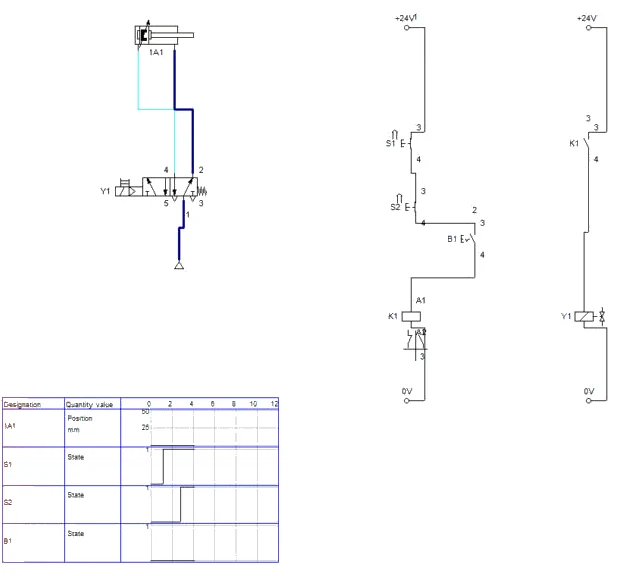
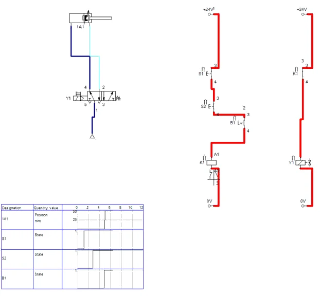
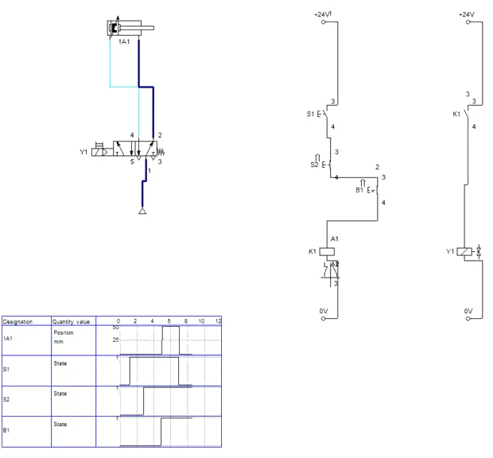
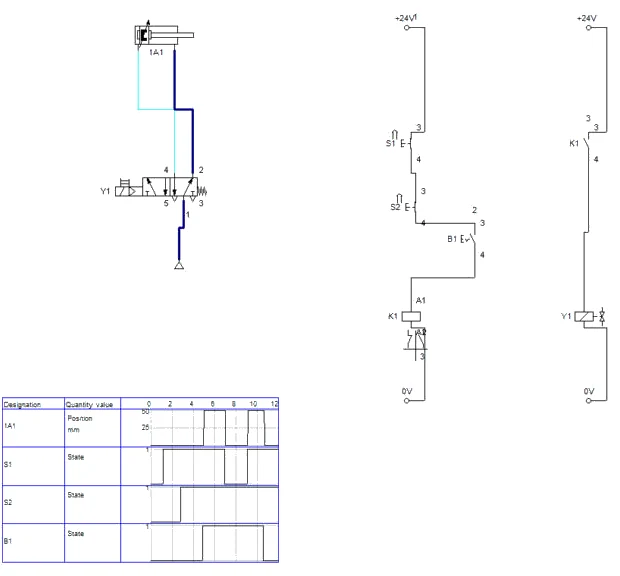
C3 · Pitanja i zadaci
1. Napišite tablicu istinitosti za S1, S2, B1 i K1. U koliko redaka je K1 = 1?
Prikaži rješenje
| S1 | S2 | B1 | K1 |
|---|---|---|---|
| 0 | 0 | 0 | 0 |
| 0 | 0 | 1 | 0 |
| 0 | 1 | 0 | 0 |
| 0 | 1 | 1 | 0 |
| 1 | 0 | 0 | 0 |
| 1 | 0 | 1 | 0 |
| 1 | 1 | 0 | 0 |
| 1 | 1 | 1 | 1 |
Tablica ima 2³ = 8 redaka, a K1 = 1 samo u jednome — kad su svi ulazi 1. To je obilježje funkcije I; funkcija ILI iz V19 ima izlaz 0 samo u jednom retku.
U FluidSIM-u
U simulaciji je K1 = 1 samo u stanju sa Slike C2.2; svaka druga kombinacija ostavlja žig gore.
2. Izračunajte stvarnu silu žiga Ø63 mm pri 6 bar (η = 0,9) i najmanji tlak pri kojem se oznaka još čisto utiskuje. Zašto se na preši preporučuje regulator tlaka uz manometar?
Prikaži rješenje
A = π · 63² / 4 = 3117,2 mm² → F = 0,9 · 0,6 · 3117,2 ≈ 1683 N
Najmanji tlak: p = 1500 / (0,9 · 3117,2) ≈ 0,535 N/mm² ≈ 5,3 bar. Rezerva je mala (oko 12 %), pa pad tlaka u mreži ispod oko 5,3 bar daje nečitke oznake. Regulator namješten npr. na 5,8 bar daje stalnu silu neovisnu o kolebanju mreže, a manometar omogućuje provjeru. Ako se želi i dojava, dodaje se tlačna sklopka.
3. Norma za postavljanje zaštitnih naprava daje za dvoručne upravljačke naprave najmanji razmak tipkala od opasnog mjesta S = K · T + C, gdje je K = 1600 mm/s brzina ruke, T ukupno vrijeme zaustavljanja, a C = 250 mm dodatak (smije biti 0 ako je dosezanje opasnog mjesta rukom spriječeno pokrovom tipkala). Izračunajte S za T = 0,12 s u oba slučaja.
Prikaži rješenje
S = 1600 · 0,12 + 250 = 192 + 250 = 442 mm
S pokrovima koji sprječavaju dosezanje: S = 192 mm. Tipkala moraju biti najmanje toliko daleko od žiga da ruka, kad se odmakne s tipkala, ne stigne do opasnog mjesta prije nego što se žig zaustavi. Račun pokazuje zašto je važno skratiti vrijeme zaustavljanja: brži ventil i kraći vodovi smanjuju potreban razmak. Prije primjene na stvarnom stroju treba provjeriti važeće izdanje norme.
4. Opišite rezultat pokusa s neistodobnim pritiskom (korak 6) i navedite dva zahtjeva koje propisana dvoručna naprava ispunjava, a ovaj sklop ne.
Prikaži rješenje
Žig se spustio čim je pritisnut S2, iako je S1 bio pritisnut 2 s ranije. Serijski spoj ne mjeri vrijeme — važno mu je samo da su oba kontakta zatvorena. Propisana naprava zahtijeva: (1) istodobnost — oba tipkala unutar zadanog vremena, tipično 0,5 s, inače nema gibanja; (2) ponovno uključivanje tek nakon otpuštanja obaju tipkala, pa zaglavljeno tipkalo onemogućuje rad. Uz to mora otkriti vlastiti kvar (npr. zalijepljeni kontakt) i spriječiti novi ciklus.
U FluidSIM-u
U simulaciji je rezultat isti kao na stolu: žig se spušta pri zatvaranju zadnjeg kontakta, bez obzira na razmak.
5. Relej K1 pouzdano privlači pri najmanje 80 % nazivnog napona. Izračunajte napon na svitku K1 kad je u nizu jedan senzor s padom napona 2,5 V, a zatim kad bi u nizu bila dva takva senzora. Je li drugi slučaj prihvatljiv?
Prikaži rješenje
Najmanji napon privlačenja: 0,8 · 24 = 19,2 V.
Jedan senzor: 24 − 2,5 = 21,5 V > 19,2 V — relej pouzdano privlači.
Dva senzora: 24 − 2 · 2,5 = 19,0 V < 19,2 V — relej možda neće privući, osobito ako je i napajanje na donjoj granici tolerancije. Zato se senzori ne spajaju u dugačke nizove; svaki senzor uključuje svoj relej (ili ulaz PLC-a), a funkcija I izvodi se kontaktima releja.
6. U koraku 7 jedan je spoj u stazi 1 prekinut. Opišite postupak traženja prekida mjerenjem napona prema 0 V i objasnite kako iz rezultata zaključujete gdje je prekid.
Prikaži rješenje
Oba tipkala drže se pritisnuta, pločica je u prihvatu. Crni mjerni vrh stalno je na 0 V, a crvenim se redom mjeri: +24 V sabirnica, ulaz S1, izlaz S1, ulaz S2, izlaz S2, izlaz B1, stezaljka A1 svitka K1. Dok je pokazivanje oko 24 V, put do te točke je ispravan. Prva točka na kojoj napon nestane nalazi se iza prekida: prekid je između nje i prethodne točke (kontakt, vodič ili stezaljka). Ako napon postoji na A1, a relej ne privlači, prekinut je svitak ili spoj A2 prema 0 V. Postupak je sustavan i ne zahtijeva odspajanje vodiča.
7. Dopuna sheme: nacrtajte izvedbu u kojoj S1 uključuje relej K2, S2 relej K3, B1 relej K4, a funkcija I ostvaruje se radnim kontaktima K2, K3 i K4 u nizu prema K1. Numerirajte staze i napišite kontaktne tablice.
Prikaži rješenje
Staza 1: +24 V → S1 → K2 → 0 V. Staza 2: +24 V → S2 → K3 → 0 V. Staza 3: +24 V → izlaz senzora B1 → K4 → 0 V. Staza 4: +24 V → radni K2 → radni K3 → radni K4 → K1 → 0 V. Staza 5: +24 V → radni K1 → Y1 → 0 V. Kontaktne tablice: K2, K3 i K4 — radni u stazi 4; K1 — radni u stazi 5. Prednosti: senzor i tipkala nose samo struju vlastitog releja, pad napona senzora ne zbraja se s ostalim elementima, a slobodni kontakti K2–K4 mogu služiti za signalizaciju ili za provjeru istodobnosti. Nedostatak: više elemenata i vrijeme privlačenja dvaju releja u nizu (oko 20 ms).
8. Što se dogodi ako rukovatelj za vrijeme spuštanja žiga izvadi pločicu iz prihvata? Je li to ponašanje poželjno?
Prikaži rješenje
Senzor B1 prestane davati signal, staza 1 se prekine, K1 otpusti, Y1 ostaje bez napona i opruga vraća razvodnik — žig se odmah diže. Za kvalitetu je to poželjno (nema udarca žiga u prazan prihvat i oštećenja žiga), a za sigurnost je dodatna zaštita, ali ne i zamjena za propisanu zaštitnu napravu: senzor prisutnosti obratka nije sigurnosni element i ne otkriva ruku u zoni žiga.
U FluidSIM-u
Isključivanje sklopke B1 za vrijeme spuštanja vraća žig jednako kao otpuštanje S1 na Slici C2.3.
Dio D · V22 Vremenski relej s kašnjenjem ukapčanja
Zadatak
Na napravi za montažu u aluminijsko kućište utiskuje se brončana čahura s preklopom. Za pouzdan dosjed potrebna je sila od najmanje 1,5 kN koja mora djelovati 3 s nakon što čahura sjedne do kraja, kako bi se materijal smirio i čahura ne bi „odskočila“. Utiskivanje izvodi dvoradni cilindar 1A Ø63/20 mm, hoda 60 mm, kojim upravlja monostabilni razvodnik 5/2 s elektromagnetom 1Y1. Na cilindru su dva magnetska senzora: 1B1 javlja uvučen, a 1B2 izvučen položaj klipa.
Operater umetne čahuru i pritisne S1. Ciklus smije početi samo ako je cilindar uvučen (1B1). Relej K1 se uključi i zadrži, cilindar utiskuje čahuru. Kad klip stigne do kraja hoda, senzor 1B2 uključuje vremenski relej KT1 s kašnjenjem ukapčanja namještenim na 3 s. Po isteku vremena mirni kontakt KT1 prekida samodržanje K1 i cilindar se vraća. Tipkalo S2 zaustavlja ciklus u svakom trenutku. Tlak u mreži je 6 bar; brzina izvlačenja namještena je prigušnim ventilom na oko 100 mm/s, a uvlačenje traje 0,4 s.
Sigurnost pri radu
Pažnja
Cilindar Ø63 mm pri 6 bar razvija silu blizu 1,9 kN — dovoljno da zgnječi prst. Tijekom ispitivanja ništa ne stavljajte pod klipnjaču; za utiskivanje na vježbenoj ploči koristite samo drveni ili plastični odstojnik. Spajanje izvodite bez napona i bez tlaka. Vremenski relej ne mijenjajte dok je sklop pod naponom, a namještanje vremena izvodite prije uključivanja.
Shema
U stazi 1 tipkalo START i senzor 1B1 spojeni su serijski, pa se ciklus ne može pokrenuti dok cilindar nije uvučen. Kontakt samodržanja K1 premošćuje oba. U istoj je stazi mirni kontakt KT1 s oznakom kašnjenja (polukružni luk na poluzi) — on se otvara tek kad istekne vrijeme od trenutka uključivanja svitka KT1. Kad svitak ostane bez napona, kontakt se vraća odmah, bez kašnjenja.
Vježba se radi u FluidSIM-u
Koraci postupka vježbe koji se odnose na spajanje na didaktičkoj ploči i mjerenje štopericom ili manometrom izvode se u simulaciji. Gdje simulacija ne može pokazati pojavu iz pokusa, to je napisano uz korak.
D1 · Samodržanje i vremenski relej KT1
- Pneumatski dio: cilindar 1A Ø63/20 mm, hod 60 mm; razvodnik 5/2 s elektromagnetom 1Y1 i oprugom. Kartica Actuating Labels cilindra: 1B1 od 0 do 2 mm (uvučen), 1B2 od 58 do 60 mm (izvučen).
- Staza 1: +24V, S2 (Pushbutton, break), zatim paralelno [S1 u nizu s kontaktom 1B1] i radni kontakt K1 (samodržanje), mirni kontakt KT1, svitak K1. Staza 2: radni kontakt K1 i 1Y1. Staza 3: kontakt 1B2 i svitak KT1.
- Senzori 1B1 i 1B2 su Make switch s Reed contact i odgovarajućom oznakom — FluidSIM ih sam veže s oznakama na cilindru. Vremenski relej: Relay with switch-on delay, vrijeme 3 s, oznaka KT1; njegov mirni kontakt u stazi 1 ima istu oznaku.
D2 · Simulacija ciklusa s držanjem
- Start: cilindar uvučen, 1B1 zatvoren (Slika D2.1). Klik na S1: K1 privuče i drži se, 1Y1 izvlači cilindar.
- Na kraju hoda 1B2 uključi KT1 i relej počne brojati (Slika D2.2, na releju se vidi proteklo vrijeme).
- Nakon 3 s mirni kontakt KT1 otvori stazu 1, K1 otpusti, cilindar se vraća; čim klip krene, 1B2 isključi KT1 i kontakt se odmah zatvori (Slika D2.3).
- Dijagram (Slika D2.4): izvlačenje, držanje oko 3 s, povratak. Klik na S2 za vrijeme izvlačenja ili držanja prekida ciklus u svakom trenutku.
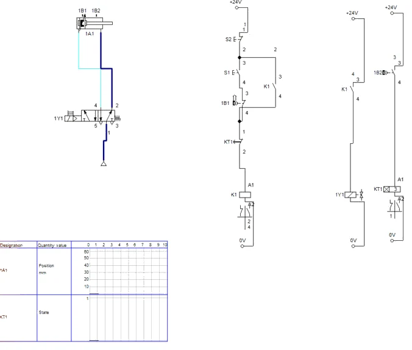
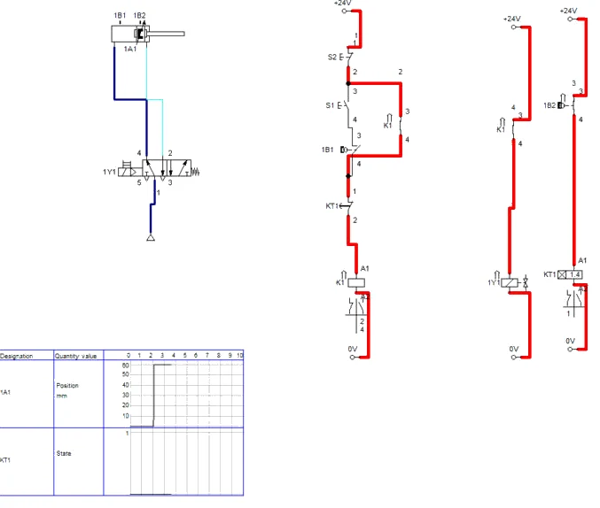
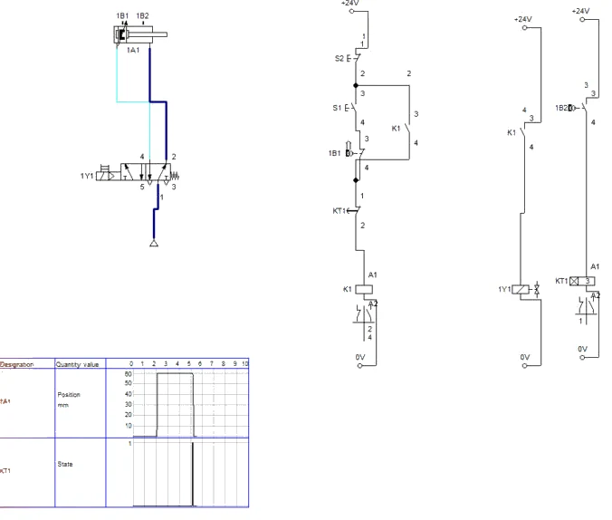
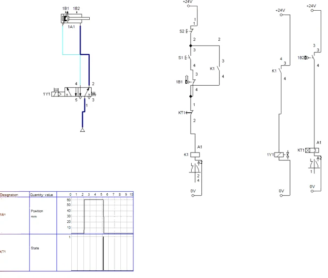
Simulacija i stol
Brzina izvlačenja nije prigušena, pa cilindar u simulaciji stiže na kraj brže od 100 mm/s iz zadatka. Vrijeme držanja ne ovisi o tome — broji se od uključenja 1B2.
D3 · Pitanja i zadaci
1. Opišite razliku između kontakta releja s kašnjenjem ukapčanja i kontakta releja s kašnjenjem iskapčanja. Koja se funkcija koristi u ovoj vježbi i zašto?
Prikaži rješenje
Kod kašnjenja ukapčanja kontakt mijenja stanje tek nakon isteka namještenog vremena od uključivanja svitka, a vraća se odmah kad svitak izgubi napon. Kod kašnjenja iskapčanja kontakt se prebaci odmah pri uključivanju, a vraća se tek nakon isteka vremena od isključivanja svitka. Ovdje se vrijeme mjeri od dolaska klipa u krajnji položaj, dakle od uključivanja svitka — potrebno je kašnjenje ukapčanja.
U FluidSIM-u
U simulaciji (Slike D2.2 i D2.3) kontakt KT1 otvori tek nakon 3 s, a zatvori se odmah kad 1B2 isključi svitak.
2. Računski zadatak: je li cilindar Ø63 mm pri 6 bar dovoljan za silu od 1,5 kN uz stupanj djelovanja 0,9? Bi li bio dovoljan cilindar Ø50 mm?
Prikaži rješenje
A = π · 63² / 4 = 3117 mm². F = 0,6 N/mm² · 3117 mm² · 0,9 = 1683 N > 1500 N — dovoljno, uz pričuvu od oko 12 %. Za Ø50: A = 1963 mm², F = 0,6 · 1963 · 0,9 = 1060 N < 1500 N — nedovoljno. Da bi Ø50 dao 1,5 kN, trebalo bi p = 1500 / (1963 · 0,9) = 0,85 N/mm² = 8,5 bar, što mreža od 6 bar ne može dati.
3. Računski zadatak: izračunajte trajanje jednog ciklusa ako umetanje čahure i vađenje gotovog dijela traje 6 s. Koliko se dijelova može izraditi u jednom satu?
Prikaži rješenje
t = 0,6 s (izvlačenje) + 3,0 s (držanje) + 0,4 s (uvlačenje) + 6,0 s (rukovanje) = 10,0 s. Učinak: 3600 s / 10 s = 360 dijelova na sat. Vrijeme držanja čini 30 % ciklusa; skraćivanje na 2 s dalo bi 400 dijelova na sat, ali samo ako to dopušta kvaliteta dosjeda.
U FluidSIM-u
Držanje u simulaciji traje 3,0 s (Slika D2.4); vrijeme gibanja ovisi o prigušenju koje u modelu nije zadano.
4. Dopunite vremenski dijagram na slici V22.2 za slučaj kad operater pritisne S2 u trenutku t = 2 s. Kako izgledaju signali K1, KT1 svitak i 1A?
Prikaži rješenje
U t = 2 s S2 prekida stazu 1: K1 i 1Y1 padaju na 0, cilindar se počinje uvlačiti i stiže u uvučeni položaj za oko 0,4 s. 1B2 se isključuje čim klip krene, pa se i svitak KT1 isključuje (oko t = 2,05 s) i vrijeme se poništava. Kontakt KT1 uopće se ne otvara jer 3 s nije isteklo. 1B1 se uključuje oko t = 2,4 s.
5. Zašto je senzor 1B1 spojen u seriju s tipkalom START? Što bi se dogodilo bez njega?
Prikaži rješenje
1B1 je početni uvjet: ciklus smije početi samo iz uvučenog položaja. Bez njega bi pritisak na S1 tijekom povratka ponovno uključio K1 i cilindar bi krenuo naprijed prije nego što operater izvadi dio. Početni uvjet sprječava i ponovni start dok je klip zapeo negdje na pola hoda.
U FluidSIM-u
U simulaciji se to vidi tako da S1 za vrijeme povratka ne pokreće novi ciklus dok cilindar ne zatvori 1B1.
6. Nakon pomicanja senzora 1B2 izmjereno vrijeme od zaustavljanja klipa do povratka skratilo se na oko 2,95 s. Objasnite zašto.
Prikaži rješenje
Pomaknuti senzor uključuje se prije nego što klip stigne do kraja hoda, pa vremenski relej počinje brojati dok se klip još giba. Vrijeme stvarnog držanja kraće je za vrijeme potrebno za prijeđenih 5 mm, što pri 100 mm/s iznosi oko 0,05 s. Senzor koji pokreće mjerenje vremena mora biti namješten tako da se uključuje tek na samom kraju hoda.
7. Vremenski relej ima točnost ponavljanja ±1 % i odstupanje namještanja ±5 % od vrijednosti na ljestvici. U kojim se granicama može naći stvarno vrijeme držanja kad je na ljestvici namješteno 3 s? Kako ćete ga namjestiti točno?
Prikaži rješenje
Zbog odstupanja ljestvice stvarno vrijeme može biti 2,85–3,15 s. Točnost ponavljanja znači da će, jednom namješteno, vrijeme od ciklusa do ciklusa odstupati najviše oko ±0,03 s. Vrijeme se zato namješta mjerenjem: izmjeri se stvarno držanje, korigira se položaj potenciometra i mjerenje se ponovi dok srednja vrijednost ne bude 3,0 s.
8. Kako biste isto kašnjenje ostvarili u čistoj pneumatici? Navedite elemente.
Prikaži rješenje
Pneumatskim vremenskim članom: jednosmjerni prigušni ventil puni mali spremnik, a razvodnik 3/2 s pneumatskim upravljanjem prebacuje se kad tlak u spremniku dosegne tlak prebacivanja. Takav je član jednostavan, ali manje točan i ovisan o tlaku mreže i temperaturi; vremenski relej daje ponovljivo i lako podesivo vrijeme.
Dio E · V26 Taktna električna metoda
Zadatak
Na napravi za označavanje žigom utiskuje se oznaka u čeličnu pločicu. Za čitljiv otisak žig mora udariti dvaput dok je pločica stegnuta. Cilindar 1A (Ø32/12 mm, hod 40 mm) steže pločicu, a cilindar 2A (Ø63/20 mm, hod 25 mm) nosi žig. Slijed je 1A+ 2A+ 2A− 2A+ 2A− 1A−, dakle šest koraka. Oba cilindra imaju bistabilne razvodnike 5/2 (1Y1/1Y2, 2Y1/2Y2) i magnetske senzore 1B1, 1B2, 2B1, 2B2. Tlak je 6 bar; brzina stezanja oko 0,2 m/s, brzina žiga oko 0,15 m/s.
Signal 2B2 javlja se dvaput u ciklusu: nakon prvog udarca treba pokrenuti povratak žiga, a nakon drugog također, ali nakon drugog povratka treba otpustiti pločicu, a ne ponovno udariti. Sam senzor ne „zna“ koji je udarac bio. To znanje nosi taktni lanac: za svaki korak postoji relej K1–K6. Relej koraka n uključuje se kad je aktivan relej koraka n−1 i kad senzor javi kraj koraka n−1; drži se samodržanjem, a isključuje ga relej koraka n+1. U svakom trenutku aktivan je samo jedan korak, pa isti senzor u koracima 3 i 5 djeluje različito.
Sigurnost pri radu
Pažnja
Cilindar Ø63 mm pri 6 bar gura silom od oko 1,9 kN, a hod od 25 mm prolazi za manje od 0,2 s — prst se ne stigne izvući. Na vježbenoj ploči ne stavljajte ništa između žiga i podloge osim predviđenog odstojnika. Pri prvom pokretanju smanjite tlak na 3 bar i pritvorite prigušne ventile. Relejni moduli sa šest releja imaju mnogo vodiča: spojene vodiče označavajte na ispisu sheme.
Shema
| Korak | Gibanje | Relej | Uključuje ga | Isključuje ga | Elektromagnet |
|---|---|---|---|---|---|
| 1 | 1A+ stezanje | K1 | S1 · 1B1 · 2B1 | K2 | 1Y1 |
| 2 | 2A+ prvi udarac | K2 | K1 · 1B2 | K3 | 2Y1 |
| 3 | 2A− povratak | K3 | K2 · 2B2 | K4 | 2Y2 |
| 4 | 2A+ drugi udarac | K4 | K3 · 2B1 | K5 | 2Y1 |
| 5 | 2A− povratak | K5 | K4 · 2B2 | K6 | 2Y2 |
| 6 | 1A− otpuštanje | K6 | K5 · 2B1 | 1B1 (mirni) | 1Y2 |
Vježba se radi u FluidSIM-u
Koraci postupka vježbe koji se odnose na spajanje na didaktičkoj ploči i mjerenje štopericom ili manometrom izvode se u simulaciji. Gdje simulacija ne može pokazati pojavu iz pokusa, to je napisano uz korak.
E1 · Pneumatski dio: stezanje i žig
- Pneumatski dio: cilindar 1A Ø32/12 mm, hod 40 mm, oznake 1B1 0–2 mm i 1B2 38–40 mm; cilindar 2A Ø63/20 mm, hod 25 mm, oznake 2B1 0–2 mm i 2B2 23–25 mm. Dva razvodnika 5/2 s dva elektromagneta (bistabilna): 1Y1/1Y2 i 2Y1/2Y2. Svaki razvodnik ima svoj izvor zraka 0,6 MPa.
- Prigušni ventili nisu ucrtani, kao ni na slici V26.1, pa su gibanja u simulaciji vrlo brza; to ne mijenja logiku lanca.
E2 · Taktni lanac K1–K6 i elektromagneti
- Taktni lanac crta se u šest staza, jedna po koraku. Staza n: radni kontakt releja prethodnog koraka u nizu s kontaktom senzora koji javlja kraj prethodnog koraka, paralelno samodržanje (radni kontakt vlastitog releja), zatim mirni kontakt releja sljedećeg koraka i svitak.
- Staza 1: +24V → S1 · 1B1 · 2B1, paralelno K1 → mirni K2 → K1. Staza 2: K1 · 1B2 ∥ K2 → mirni K3 → K2. Staza 3: K2 · 2B2 ∥ K3 → mirni K4 → K3. Staza 4: K3 · 2B1 ∥ K4 → mirni K5 → K4. Staza 5: K4 · 2B2 ∥ K5 → mirni K6 → K5. Staza 6: K5 · 2B1 ∥ K6 → mirni 1B1 → K6.
- Staze 7–10 (Slika V26.4): K1 → 1Y1; K2 ∥ K4 → 2Y1; K3 ∥ K5 → 2Y2; K6 → 1Y2. Senzori su Make switch / Break switch s Reed contact; mirni kontakt 1B1 u stazi 6 je Break switch.
- Pazite pri crtanju: priključak +24V i 0V je desni kružić simbola; vod se u postojeći vod spaja ispuštanjem točno na njegov okomiti dio. F6 → No superficial errors detected. State Diagram: oba cilindra, Fixed interval 0–1 s.
E3 · Simulacija šest koraka
- Za snimanje uključite usporenje: Options → Simulation → Slow-motion Factor 1:10 (poslije vratite Maintain Real Time). Start: oba cilindra uvučena, nijedan relej ne privlači (Slika E3.1).
- Klik na S1: K1 → 1A+; 1B2 uključi K2 → 2A+ (prvi udarac, Slika E3.2); 2B2 uključi K3 → 2A− (Slika E3.3); 2B1 uključi K4 → drugi udarac; 2B2 uključi K5 → 2A− (Slika E3.4); 2B1 uključi K6 → 1A− (Slika E3.5). Kad se 1A vrati, mirni kontakt 1B1 otpusti K6.
- U svakom trenutku privučen je samo jedan relej. Dijagram (Slika E3.6): bez prigušnih ventila cijeli ciklus traje oko 0,3 s (od oko 0,21 do 0,50 s simulacije).
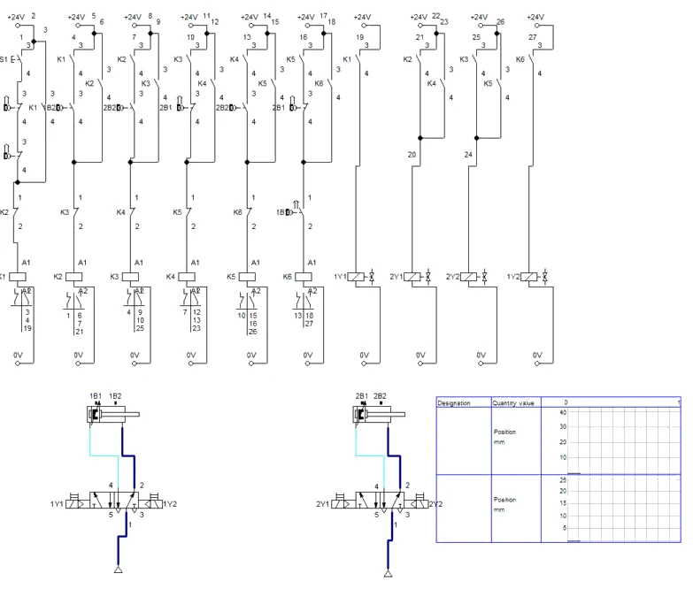
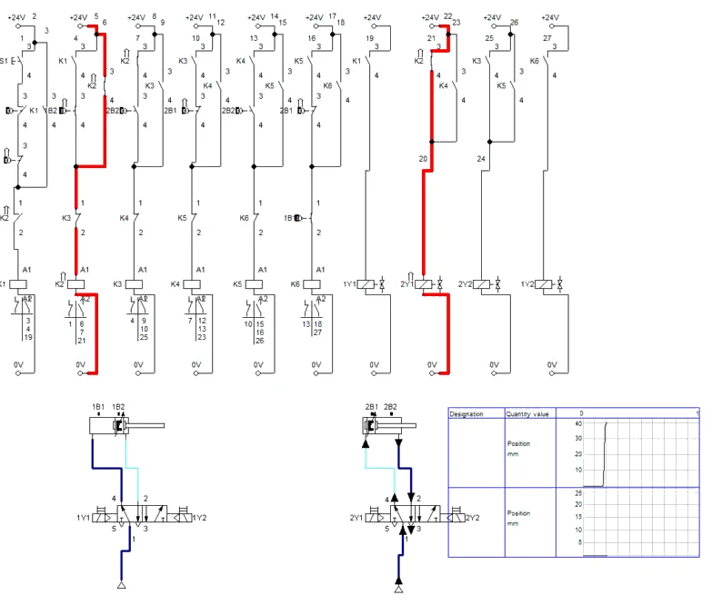
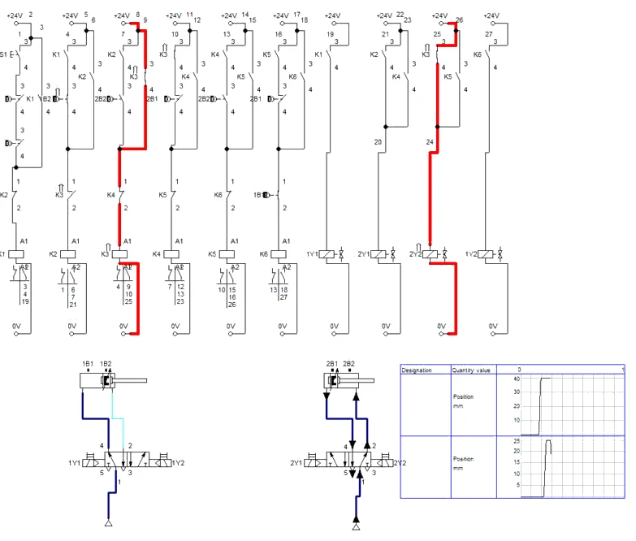
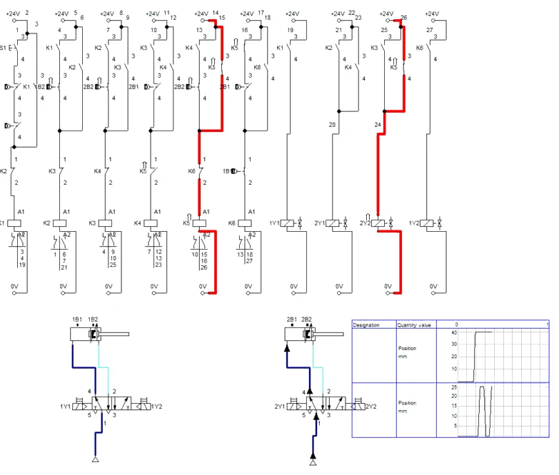
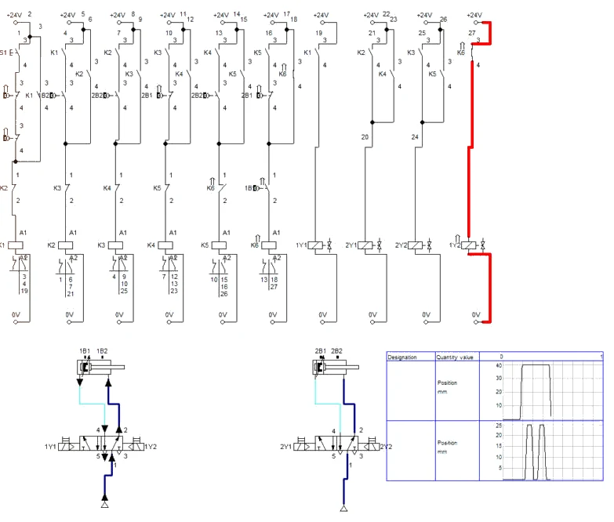
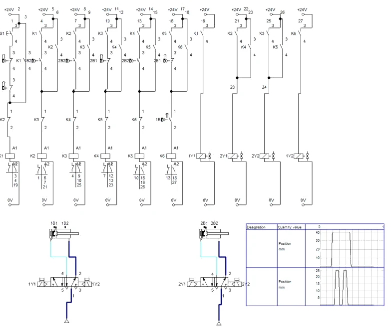
E4 · Pitanja i zadaci
1. Senzor 2B2 aktivan je na kraju koraka 2 i na kraju koraka 4. Kako lanac zna da nakon prvog aktiviranja treba uključiti K3, a nakon drugog K5?
Prikaži rješenje
K3 se uključuje preko serije K2 · 2B2, a K5 preko serije K4 · 2B2. Na kraju koraka 2 aktivan je samo K2, pa 2B2 može uključiti samo K3; na kraju koraka 4 aktivan je samo K4, pa 2B2 uključuje K5. Relej aktivnog koraka „otvara vrata“ samo jednom sljedećem koraku.
U FluidSIM-u
U simulaciji se to vidi na Slikama E3.3 i E3.4: isti signal 2B2 jednom uključuje K3, drugi put K5.
2. Računski zadatak: izračunajte teorijsku i stvarnu silu žiga Ø63 mm pri 6 bar (η = 0,9). Koliki bi tlak bio potreban za silu od 2 kN?
Prikaži rješenje
A = π · 63² / 4 = 3117 mm². Ft = 0,6 · 3117 = 1870 N; F = 1870 · 0,9 = 1683 N. Za 2000 N: p = 2000 / (3117 · 0,9) = 0,713 N/mm² = 7,1 bar — više od tlaka mreže. Treba veći cilindar (Ø80 mm daje oko 2,7 kN) ili pojačivač tlaka.
3. Računski zadatak: izračunajte trajanje gibanja u ciklusu (preklapanje oko 30 ms po koraku) i potrošnju slobodnog zraka po ciklusu.
Prikaži rješenje
1A: 2 · 40 / 200 = 0,40 s. 2A: 4 · 25 / 150 = 0,67 s. Gibanja 1,07 s, preklapanja 6 · 0,03 = 0,18 s, ukupno ≈ 1,25 s.
Zrak, omjer 6,923: 1A (804,2 + 691,2) · 40 = 59 816 mm³ → 0,414 Nl. 2A, dva dvostruka hoda: (3117,2 + 2803,1) · 25 · 2 = 296 016 mm³ → 2,049 Nl. Ukupno ≈ 2,46 Nl po ciklusu.
U FluidSIM-u
Bez prigušnih ventila simulirani ciklus traje oko 0,3 s (Slika E3.6); s brzinama iz zadatka trajao bi oko 1,25 s kao u proračunu.
4. Dopunite shemu: nacrtajte staze koje treba dodati da žig udara triput. Koliko releja tada ima lanac i kako se mijenjaju staze 8, 9 i 10?
Prikaži rješenje
Slijed postaje 1A+ 2A+ 2A− 2A+ 2A− 2A+ 2A− 1A− — osam koraka, releji K1–K8. Dodaju se K6 (2A+, uključuje K5 · 2B1) i K7 (2A−, uključuje K6 · 2B2); dosadašnji zadnji korak postaje K8 (1A−, uključuje K7 · 2B1, isključuje 1B1). K5 sad isključuje K6, K6 isključuje K7, K7 isključuje K8. Staza 8 dobiva paralelni kontakt K6 (2Y1 = K2 + K4 + K6), staza 9 kontakt K7 (2Y2 = K3 + K5 + K7), a staza 10 napaja se preko K8.
5. Koliko bi releja trebala kaskadna metoda za isti slijed? Napišite podjelu u grupe i usporedite metode.
Prikaži rješenje
Grupe: I = 1A+ 2A+; II = 2A−; III = 2A+; IV = 2A− 1A−. Četiri grupe, četiri releja — dva manje nego u taktnoj metodi. Taktna metoda ima više releja, ali je potpuno pravilna: svaki korak izgleda jednako, pa se lako crta, proširuje i dijagnosticira (svjetleći relej pokazuje korak u kojem je sklop stao). Kod dugih slijedova s ponavljanjem istog cilindra ta prednost prevladava.
6. Sklop je stao usred ciklusa. Svijetli relej K4, žig je uvučen, pločica stegnuta. Gdje tražite kvar?
Prikaži rješenje
K4 je korak 4, drugi udarac: 2Y1 bi trebao biti pod naponom i 2A izvučen. Redom se provjerava: svijetli li utikač 2Y1 (staza 8, kontakt K4); ako svijetli, kvar je pneumatski (razvodnik zapeo, prigušni ventil zatvoren, nema zraka); ako ne svijetli, kvar je u stazi 8 — kontakt K4 ili vodič. Kad bi 2A bio izvučen, a K5 se ne uključuje, provjerava se senzor 2B2 i serija K4 · 2B2 u stazi 5.
7. Zašto je u stazi 1 uz tipkalo START uvjet 1B1 · 2B1? Što bi se dogodilo da ga nema, a netko pritisne START usred ciklusa?
Prikaži rješenje
Uvjet osigurava da ciklus počinje samo iz početnog položaja. Bez njega bi pritisak na START usred ciklusa uključio K1 uz relej aktivnog koraka; K1 bi ponovno uključio 1Y1, a lanac bi imao dva aktivna koraka i izvodio neodređen slijed. Pravilo taktne metode je da u lancu smije biti aktivan samo jedan korak.
Zapis simulacije
Rezultati simulacije u FluidSIM-P 4.2 za sve vježbe na ovoj stranici, uz vrijednosti iz proračuna (rješenje).
| Veličina | Očekivano (proračun / zadatak) | FluidSIM | Komentar |
|---|---|---|---|
| Kašnjenje iskapčanja (V09) | 8,5 s (proračun) | oko 8,3 s uz prigušnicu 3 % (Slika A2.4) | povratak pri oko 0,15 MPa u spremniku |
| Funkcija ILI (V19) | K1 = S1 ∨ S2 | K1 privlači sa S1, sa S2 i s oba (Slike B2.1–B2.3) | |
| Funkcija I (V20) | K1 = S1 · S2 · B1 | K1 samo uz sva tri kontakta (Slika C2.2) | B1 kao sklopka sa zasunom |
| Neistodobni pritisak (V20) | žig se spušta | žig se spušta pri zadnjem kontaktu | nema nadzora vremena |
| Držanje na kraju hoda (V22) | 3 s | 3,0 s (Slika D2.4) | KT1 s kašnjenjem ukapčanja |
| Slijed V26 | 1A+ 2A+ 2A− 2A+ 2A− 1A− | isti, jedan relej po koraku (Slike E3.2–E3.5) | |
| Trajanje ciklusa V26 | 1,25 s (s prigušenjem) | oko 0,3 s bez prigušnih ventila (Slika E3.6) | logika ista |
Spremanje i predaja
- File → Save As. U polje Naziv datoteke upišite
PIH_2026-2027_Prezime_Ime_V##.ct(## je broj vježbe, bez kvačica) i kliknite Spremi. Kasnije spremanje: File → Save (Ctrl + S). - Snimka: za vrijeme simulacije (nakon Pause) snimite zaslon sa shemom i dijagramom (u sustavu Windows: Windows + Shift + S), ili shemu spremite naredbom File → TIFF Export.
- Odgovorite na pitanja vježbe; rezultate simulacije usporedite s proračunom.
- Ako nastavnik traži predaju: shema
.ct, snimka simulacije i odgovori. Sve datoteke imenujtePIH_2026-2027_Prezime_Ime_….
Primjena na vlastiti zadatak P##
Projekt SL-3, vaša varijanta P## (ulazni podaci u „Projektni zadaci P01–P21”): odredite treba li vašem slijedu vremensko držanje (kao V22) ili ponovljeni korak istog cilindra (kao V26) i koju biste metodu upravljanja tada izabrali.
Kod pitanja: susjed → radni list i ova stranica → nastavnik. AI smijete koristiti uz navođenje što je i kako napravljeno.
Za nastavnika
Dio A · vježba V09
Otvori upute za nastavnika
Priprema
Vježba traje 2 sata (2 × 45 min) i najbolje ju je izvesti neposredno nakon vježbe s kašnjenjem ukapčanja, s istim elementima. Provjerite da vremenski član omogućuje okretanje nepovratnog ventila ili pripremite pojedinačne dijelove. Manometar na spremniku je važan da polaznici vide eksponencijalni pad tlaka — dobro je da jedna skupina zapiše tlak svake sekunde i nacrta krivulju.
Tijek sata
- Uvod: kašnjenje iskapčanja, usporedba s kašnjenjem ukapčanja, primjeri iz pogona — 10 min.
- Simulacija i usporedba dijagrama — 10 min.
- Spajanje i puštanje u rad — 15 min.
- Namještanje i mjerenje kašnjenja, očitanje tlaka vraćanja — 20 min.
- Pokusi s kratkim i dvostrukim pritiskom te s okrenutim ventilom — 20 min.
- Računski zadaci, dijagram, pospremanje — 15 min.
Očekivani rezultati
Zaklopka se otvara odmah, a zatvara 8,0 ± 0,5 s nakon otpuštanja. Kratki pritisak daje gotovo isto kašnjenje; dvostruki pritisak produljuje otvorenost. Okretanjem ventila dobiva se kašnjenje ukapčanja. Računski: τ = 8,31 s, t = 8,5 s; 2,13 Nl/min ili 37,5 cm³ za 8 s; 265 N; 0,50 Nl po ciklusu.
Česte pogreške
- Nepovratni ventil ostavljen je u položaju iz prethodne vježbe, pa se dobiva kašnjenje ukapčanja.
- Vrijeme se mjeri od pritiska umjesto od otpuštanja tipkala.
- U formulu se uvrštavaju pretlakovi umjesto apsolutnih tlakova.
- Signalni ventil 1S1 nema ispuh (npr. 2/2), pa se spremnik ne može isprazniti ni kroz prigušnicu.
Vrednovanje
| Kriterij | Bodovi |
|---|---|
| Ispravan spoj i smjer nepovratnog ventila | 4 |
| Namješteno i izmjereno kašnjenje, zapisan tlak vraćanja | 4 |
| Pokusi iz koraka 5 i 6 s tumačenjem | 3 |
| Računski zadaci 2, 3 i 5 | 5 |
| Dijagram i odgovori 7 i 8 | 4 |
| Ukupno | 20 |
Dio B · vježba V19
Otvori upute za nastavnika
Priprema
Vježba je kratka u spajanju, pa je naglasak na logici i usporedbi s pneumatikom. Pripremite kolut cijevi od oko 12 m za pokazni pokus kašnjenja; mobitel sa snimanjem usporenim zapisom omogućuje procjenu kašnjenja na oko 10 ms. Ako polaznici nisu radili V06, ukratko pokažite naizmjenični ventil.
Tijek sata
- 0–10 min: logičke funkcije u kontaktnoj tehnici, paralelni spoj, tablica istinitosti.
- 10–30 min: spajanje staza 1–3, ispitivanje četiriju kombinacija.
- 30–45 min: pokazni pokus s dugim pneumatskim vodom, pitanja 3 i 4.
- 45–70 min: dopuna s B1 i isključivanjem s dva mjesta (pitanja 6 i 7), izvedba na ploči.
- 70–85 min: računski zadatak 5, pitanja 2 i 8.
- 85–90 min: rastavljanje, osvrt.
Očekivani rezultati
Tablica istinitosti ispravna za sve kombinacije; nakon dopune sklop reagira na tri ulaza i blokira se s oba mjesta. Polaznik formulira pravilo „uključivanje paralelno, isključivanje u niz“. Računski: kašnjenje punjenja oko 0,2 s prema oko 30 ms, struja oko 0,17 A, oko 15 stanica teorijski.
Česte pogreške
- paralelni spoj izveden tako da je jedno tipkalo spojeno na 0 V, pa pritisak na njega izaziva kratki spoj;
- mirni kontakti za zaustavljanje spojeni paralelno, pa zaustavljanje radi tek kad su pritisnuta oba;
- tablica istinitosti za tri ulaza s manje od 8 redaka;
- u računu kašnjenja zanemareno odzračivanje voda pri otpuštanju.
Vrednovanje
| Kriterij | Bodovi |
|---|---|
| Ispravno spojen sklop ILI, tablica istinitosti i jednadžba | 6 |
| Usporedba s pneumatskom izvedbom (pitanja 3 i 4) | 4 |
| Dopuna trećim ulazom i isključivanjem s dva mjesta | 5 |
| Računski zadatak 5 i pitanje 8 | 4 |
| Sigurnost i urednost | 1 |
| Ukupno | 20 |
Dio C · vježba V20
Otvori upute za nastavnika
Priprema
Provjerite vrstu senzora (trožilni PNP) i njegov raspored vodiča. Za korak 7 pripremite način skrivenog prekida (npr. odspojen vodič ispod kućišta stezaljke ili neispravan laboratorijski vodič). Razgovor o dvoručnom uključivanju vodite kao razgovor o granicama: polaznici moraju izaći s jasnom porukom da serijski spoj dvaju tipkala nije zaštitna naprava.
Tijek sata
- 0–10 min: funkcija I, serijski spoj, razlika prema V19.
- 10–35 min: spajanje staza 1 i 2 (obje varijante senzora), ispitivanje osam kombinacija.
- 35–45 min: pokus s neistodobnim pritiskom, rasprava o dvoručnom uključivanju (pitanja 3 i 4).
- 45–60 min: traženje prekida mjerenjem napona (pitanje 6).
- 60–80 min: računski zadaci 2, 3 i 5, dopuna s relejima K2–K4 (pitanje 7).
- 80–90 min: rastavljanje, osvrt.
Očekivani rezultati
Tablica istinitosti ispravna u svih osam redaka; polaznik samostalno pronalazi prekid u najviše pet mjerenja. Računski: 1683 N i najmanji tlak oko 5,3 bar, sigurnosni razmak 442 mm (192 mm s pokrovom), napon na svitku 21,5 V odnosno 19,0 V.
Česte pogreške
- izlaz senzora spojen na +24 V, a napajanje senzora na svitak — senzor ne radi;
- pri mjerenju napona crni vrh premješta se s točke na točku, pa se mjeri napon na kontaktu, a ne prema 0 V, i rezultati se krivo tumače;
- tablica istinitosti ispisana s nepotpunim kombinacijama;
- zaključak da je serijski spoj S1 · S2 „dvoručna zaštita“.
Vrednovanje
| Kriterij | Bodovi |
|---|---|
| Ispravno spojen sklop I sa senzorom, tablica istinitosti | 5 |
| Traženje prekida mjerenjem napona | 4 |
| Računski zadaci 2, 3 i 5 | 5 |
| Obrazloženje ograničenja serijskog spoja u odnosu na dvoručnu napravu | 3 |
| Dopuna s relejima K2–K4 | 2 |
| Sigurnost i urednost | 1 |
| Ukupno | 20 |
Dio D · vježba V22
Otvori upute za nastavnika
Priprema
Provjerite da vremenski releji imaju odabranu funkciju kašnjenja ukapčanja (kod višefunkcijskih releja birač funkcije često je na prednjoj strani). Senzore postavite unaprijed približno u krajnje položaje, ali ih ne učvrstite — namještanje je dio zadatka. Umjesto čahure koristite drveni odstojnik. Pripremite tablicu za pet mjerenja vremena. Vježba se nastavlja na V21, pa studenti trebaju znati spojiti krug samodržanja.
Tijek sata
- Kratko ponavljanje V21 i uvod u vremenski relej: funkcije, oznake kontakata (10 min).
- Pneumatski dio, postavljanje i spajanje senzora (20 min).
- Strujne staze i prvo pokretanje (20 min).
- Mjerenje vremena, pomicanje senzora, ispitivanje tipkala STOP (20 min).
- Crtanje vremenskog dijagrama, računski zadaci 2 i 3 (15 min).
- Rastavljanje i pregled zapisnika (5 min).
Očekivani rezultati
Sklop radi pouzdano, srednje izmjereno vrijeme držanja je 3,0 ± 0,15 s. Studenti znaju objasniti zašto pomicanje senzora skraćuje stvarno vrijeme držanja i crtaju vremenski dijagram s ispravnim trenucima uključivanja. Računski: sila 1683 N, ciklus 10 s, 360 dijelova na sat.
Česte pogreške
- Na višefunkcijskom releju odabrana funkcija kašnjenja iskapčanja ili impulsna funkcija.
- Upotrijebljen radni umjesto mirnog kontakta KT1 — cilindar se ne vraća ili se vraća odmah.
- Izlaz senzora (crni vodič) spojen izravno na 0 V ili senzor bez napajanja pa LED ne svijetli.
- Senzor 1B1 izostavljen, pa se cilindar može ponovno pokrenuti tijekom povratka.
- Vrijeme mjereno od pritiska na S1 umjesto od zaustavljanja klipa.
Vrednovanje
| Kriterij | Bodovi |
|---|---|
| Ispravno spojen i namješten pneumatski dio i senzori | 4 |
| Ispravne strujne staze, sklop radi prema zadatku | 5 |
| Mjerenje vremena i obrazložena usporedba s namještenim | 3 |
| Točan vremenski dijagram i dopuna za pritisak na STOP | 3 |
| Točni računski zadaci | 3 |
| Sigurnost i red na radnom mjestu | 2 |
| Ukupno | 20 |
Dio E · vježba V26
Otvori upute za nastavnika
Priprema
Vježba traži šest releja; ako ih nema dovoljno, studenti rade u paru skupina na dvije spojene ploče. Svaki relej treba četiri kontakta: samodržanje, uvjet sljedećeg koraka, mirni kontakt u prethodnom koraku i kontakt elektromagneta (K1 i K6 trebaju tri). Pripremite ispis staza s označenim brojevima staza i releja. Ispitivanje lanca bez zraka (korak 3 postupka) nemojte preskakati — ono pokazuje glavnu ideju metode. Prethodno znanje: V21, V24, V25 i jedinica 4.10.
Tijek sata
- Uvod: problem ponavljanja istog cilindra, načelo taktnog lanca (10 min).
- Dijagram put–korak i tablica koraka (10 min).
- Pneumatski dio i senzori (10 min).
- Taktni lanac i ispitivanje bez zraka (25 min).
- Staze elektromagneta, puštanje u rad, mjerenje vremena (20 min).
- Proširenje na tri udarca ili rasprava o dijagnostici, računski zadaci, rastavljanje (15 min).
Očekivani rezultati
Studenti objašnjavaju zašto isti senzor u različitim koracima uključuje različite releje i pokazuju da je u svakom trenutku aktivan samo jedan korak. Ciklus radi s dva udarca; izmjereno trajanje gibanja je 1,2–1,6 s. Računski: 1683 N, 7,1 bar za 2 kN, ≈ 1,25 s, ≈ 2,46 Nl po ciklusu. Uspješnije skupine proširuju lanac na tri udarca.
Česte pogreške
- Relej koraka uključuje se samo senzorom, bez kontakta prethodnog koraka — lanac „preskače“ korake.
- Mirni kontakt sljedećeg releja izostavljen, pa ostaje više aktivnih koraka i razvodnik dobiva suprotne naredbe istodobno.
- U stazama 8 i 9 releji koraka spojeni serijski umjesto paralelno.
- K6 se isključuje relejem K1 umjesto senzorom 1B1 pa ostaje uključen u mirovanju.
- Pri proširenju na tri udarca zaboravi se preusmjeriti isključivanje K5 na novi relej.
Vrednovanje
| Kriterij | Bodovi |
|---|---|
| Dijagram put–korak i tablica koraka s relejima | 3 |
| Taktni lanac ispravno spojen i ispitan bez zraka | 6 |
| Staze elektromagneta, ciklus s dva udarca radi | 4 |
| Točni računski zadaci | 3 |
| Proširenje ili obrazložena usporedba s kaskadnom metodom | 2 |
| Sigurnost i red na radnom mjestu | 2 |
| Ukupno | 20 |
Napomena za FluidSIM
Gotove sheme su gore na stranici. V09: kašnjenje se namješta otvorenošću jednosmjernog prigušnog ventila (3 % daje oko 8,3 s); nepovratni ventil propušta prema spremniku. V20: kapacitivni senzor zamijenjen je sklopkom sa zasunom B1. V22 i V26: senzori su reed-kontakti vezani oznakama uz cilindar. V26 je nacrtan bez prigušnih ventila, pa je ciklus oko 0,3 s; snimke su napravljene uz usporenje 1:10, a u spremljenoj shemi vraćen je Maintain Real Time.